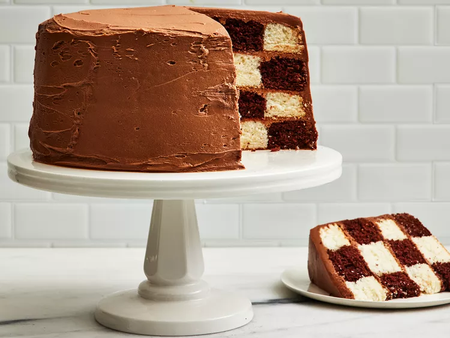

Checkerboard Cake

Description
This checkerboard cake consists of tender vanilla and chocolate cakes with a rich, creamy chocolate frosting.
Ingredients
- 1 (15.25 ounce) package devil's food cake mix (such as Duncan Hines®)
- 2 cups whole milk, divided
- ⅔ cup salted butter, melted, divided/li>
- 3 large eggs
- 2 teaspoons vanilla extract, divided
- Baking spray with flour
Steps
- Prepare cakes: Preheat the oven to 350 degrees F (175 degrees C) with racks in middle and lower third positions.
- Place devil's food cake mix, 1 cup milk, 1/3 cup melted butter, 3 large eggs, and 1 teaspoon vanilla extract in the bowl of a stand mixer. Beat at low speed, using the paddle attachment, for 1 minute until combined. Increase speed to medium and beat for 2 minutes.
More recipes